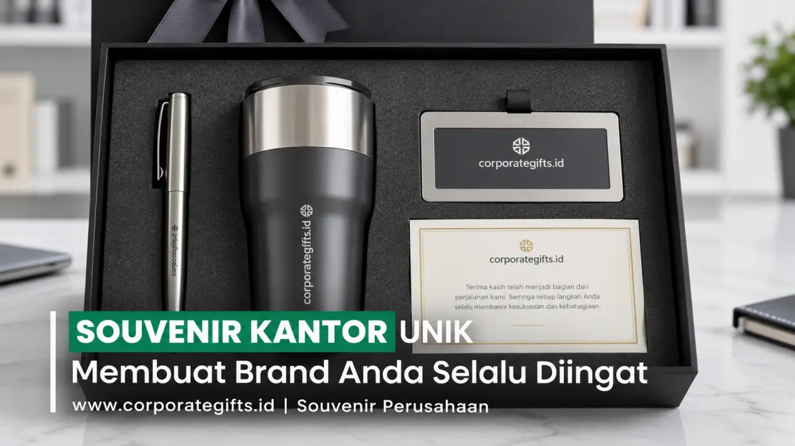

Corporate Gifts ID - Souvenir kantor unik adalah produk cinderamata berdesain tematik, fungsional, dan memiliki mutu material unggul yang dirancang khusus oleh perusahaan untuk memperkuat identitas brand sekaligus mempererat hubungan profesional dengan klien, karyawan, dan mitra strategis. Berbeda dari produk promosi konvensional yang kerap berakhir di laci penyimpanan, jenis cinderamata unik ini dikurasi berdasarkan utilitas tinggi di meja kerja, keindahan estetika, dan teknik personalisasi logo yang presisi agar melekat kuat dalam memori penerima selama bertahun-tahun.
Poin Kunci Souvenir Kantor Unik:
- Visibilitas Harian di Meja Kerja: Aksesoris fungsional seperti tempat kartu nama kayu solid dan mouse pad custom dilihat secara berulang kali setiap hari kerja.
- Perangkat Gaya Hidup Digital: Gadget modern seperti power bank berdaya tahan tinggi, wireless charging pad, dan USB flashdisk metal memberikan nilai praktis optimal.
- Dukungan Nilai Keberlanjutan (ESG): Cinderamata berbahan ramah lingkungan seperti notebook kertas daur ulang dan tumbler reusable memperkuat reputasi green corporate.
- Pendekatan Segmentasi Jitu: Membedakan fokus motivasi produktivitas untuk karyawan internal dengan sentuhan prestisius bagi klien bisnis VIP.
- Kemasan Berkelas: Sentuhan hardbox rigid bermotif minimalis meningkatkan persepsi nilai barang secara signifikan saat pertama kali diterima.
Mengapa Souvenir Kantor Unik Penting untuk Membangun Citra Brand?
Dalam ekosistem bisnis modern yang sangat kompetitif, menjaga hubungan kemitraan tidak hanya bersandar pada pertemuan formal dan proposal bisnis. Sering kali, detail apresiasi nyata seperti souvenir perusahaan unik menjadi duta merek diam-diam yang bekerja membangun reputasi positif setiap kali barang tersebut disentuh dan digunakan.
Cinderamata yang dipilih secara matang menciptakan ikatan emosional (emotional connection). Klien dan karyawan tidak lagi memandang barang tersebut sebagai alat promosi sepihak, melainkan sebagai bentuk penghargaan tulus atas dedikasi dan kolaborasi yang terjalin.
3 Kategori Souvenir Kantor Unik yang Memperkuat Branding
Untuk memastikan cinderamata yang dibagikan memiliki daya tarik kuat dan relevansi tinggi, berikut tiga klasifikasi souvenir kantor unggulan:
1. Souvenir Meja Kerja yang Fungsional & Estetik
Barang yang diletakkan secara permanen di atas meja kerja memberikan frekuensi tayangan visual tertinggi. Ragam produk terpopuler meliputi:
- Tempat Kartu Nama Kayu Jati / Mahoni: Tampil natural, hangat, dan berwibawa dengan sentuhan grafir laser logo instansi yang presisi.
- Mouse Pad Kulit Sintetis Berbantalan Ergonomis: Membantu kenyamanan tangan saat bekerja sekaligus menyediakan bidang branding luas untuk logo dan pesan perusahaan.
- Jam Meja Digital & Kalender Abadi: Menghadirkan fungsi penting pengatur waktu kerja harian dengan desain minimalis elegan.
2. Souvenir Kantor Modern, Praktis, & Berbasis Teknologi
Mengikuti ritme kerja profesional masa kini yang dinamis dan mobile, merchandise berbasis teknologi cerdas menjadi incaran utama:
- Powerbank Fast Charging Berbalut Logam: Sangat krusial bagi tim eksekutif yang sering melakukan perjalanan dinas atau meeting di luar kantor.
- USB Flashdisk Kartu Metal: Praktis disimpan di dalam dompet dan ideal untuk memuat profil perusahaan digital secara eksklusif.
- Smart LED Tumbler Pengukur Suhu: Wadah hidrasi modern dari lini katalog souvenir kantor kami yang menjaga suhu kopi panas hingga sore hari.
3. Souvenir Kantor Ramah Lingkungan (Eco-Friendly)
Mencerminkan kepedulian lingkungan (ESG) yang kini menjadi standar tata kelola korporat global:
- Totebag Kanvas Katun Tebal: Pengganti kantong plastik belanja yang kuat dan bergaya santai namun rapi.
- Set Sedotan Stainless & Sendok Garpu Kayu: Mendorong kebiasaan makan higienis dan mengurangi alat makan sekali pakai.
- Notebook Spiral Kertas Daur Ulang: Buku catatan bertekstur alami yang dipadukan dengan pena berbahan serat bambu.

Kombinasi material alami kayu dan aksen logam modern memberikan sentuhan prestisius bagi perlengkapan kerja harian.
Tabel Komparasi Ide Souvenir Kantor Unik: Material & Target Penerima
Gunakan tabel pemetaan berikut untuk menentukan kecocokan produk dengan profil penerima dan sasaran branding Anda:
| Jenis Cinderamata | Material Unggulan | Nilai Guna Rutin | Target Penerima Ideal | Dampak Branding Korporat |
|---|---|---|---|---|
| Tempat Kartu Meja Kayu | Kayu Jati / Mahoni Solid | Pajangan & wadah kartu nama meja | Direksi, Manajer, & Klien B2B | Mewah, hangat, dan berwibawa |
| Smart LED Tumbler | Stainless Steel SUS 304 Vakum | Minum kopi/air dingin harian | Karyawan, Peserta Event, & Mitra | Modern, mobilitas tinggi, & sehat |
| Wireless Charging Pad | Bambu Alami / ABS Matte | Pengisian baterai ponsel tanpa kabel | Klien Teknologi, Startup, & Gen Z | Inovatif, praktis, & berkelas |
| Eco Notebook & Bamboo Pen | Kertas Daur Ulang & Bambu | Catatan rapat & agenda kerja | Peserta Seminar & Komunitas CSR | Peduli lingkungan & bertanggung jawab |
Souvenir untuk Karyawan vs Klien: Dua Pendekatan Strategis
Membagikan souvenir kantor memiliki dua fungsi berbeda tergantung target audiens:
Fokus Karyawan Internal
Tujuannya adalah membangun rasa memiliki (sense of belonging), loyalitas, dan motivasi kerja. Pilihlah barang pendukung produktivitas seperti planner tahunan, tumbler seragam kantor, atau jaket hoodie berkualitas.
Fokus Klien & Mitra B2B
Tujuannya adalah menjaga kemitraan dan reputasi bisnis. Pilihlah barang yang memancarkan eksklusivitas, seperti gift set pena logam berukir nama, flashdisk berbalut kulit, atau hampers akhir tahun mewah.
4 Tips Memilih Souvenir Kantor yang Tepat untuk Brand Anda
Agar investasi pengadaan merchandise menghasilkan dampak nyata, perhatikan panduan penting berikut:
- Pertahankan Konsistensi Identitas Visual: Selaraskan warna dasar produk atau kemasan dengan palet warna brand resmi perusahaan. Pastikan logo dicetak atau digrafir secara proporsional—tidak terlalu mencolok hingga mengurangi estetika, namun tetap mudah dikenali.
- Prioritaskan Material Tahan Banting: Cinderamata yang cepat rusak dalam hitungan minggu justru mencoreng reputasi perusahaan. Pilihlah material yang kokoh dan tahan pakai bertahun-tahun.
- Sesuaikan dengan Momentum Acara: Souvenir untuk workshop hendaknya bersifat aplikatif, sedangkan souvenir untuk perayaan ulang tahun perusahaan sebaiknya lebih berkesan prestisius.
- Sempurnakan Kemasan (Packaging): Kemasan kotak keras (hardbox) dengan lapisan busa presisi (custom foam insert) mampu menaikkan nilai persepsi barang hingga berkali-kali lipat.
Inspirasi Kampanye Branding Sukses Melalui Souvenir Kantor
Banyak korporasi terkemuka berhasil memanfaatkan souvenir sebagai strategi hubungan masyarakat yang ampuh:
- Perusahaan Finansial: Memberikan gift set smart tumbler ber-display suhu yang digrafir nama personal masing-masing nasabah prioritas, menghasilkan kepuasan layanan yang luar biasa.
- Institusi Pendidikan & Pelatihan: Membagikan stationery kit bertema ramah lingkungan yang terus dipakai peserta seminar saat kembali ke instansi asal mereka.
- Perusahaan Teknologi: Membagikan wireless charging pad minimalis dengan logo bercahaya halus di meja kerja klien kunci.
Pertanyaan Seputar Souvenir Kantor Unik (FAQ)
Kesimpulan & Rekomendasi Solusi Pengadaan
Souvenir kantor unik adalah representasi nyata martabat dan nilai profesionalisme perusahaan Anda. Melalui desain yang estetis, fungsi harian yang terbukti bermanfaat, dan personalisasi logo yang anggun, Anda membangun jembatan relasi yang kokoh di hati klien dan mitra kerja.
Konsultasikan konsep cinderamata kantor idaman Anda bersama tim spesialis di CorporateGifts.ID untuk memperoleh visualisasi mockup logo gratis dan penawaran harga bersaing siap kirim ke seluruh nusantara.

Ditulis oleh: Arinda Zakia
Senior Corporate Gifting SpecialistSpesialis strategi souvenir promosi korporat, kurasi paket seminar kit terpadu, dan hampers eksekutif B2B dengan pengalaman lebih dari 7 tahun mendampingi ratusan instansi pemerintah dan perusahaan multinasional di Indonesia.
Lihat Profil Lengkap & Panduan Lainnya